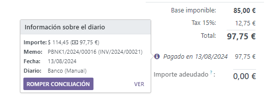

Payments¶
In Odoo, payments can either be automatically linked to an invoice or bill or be stand-alone records for use at a later date:
If a payment is linked to an invoice or bill, it reduces/settles the amount due of the invoice. You can have multiple payments related to the same invoice.
If a payment is not linked to an invoice or bill, the customer has an outstanding credit with your company, or your company has an outstanding debit with a vendor. You can use those outstanding amounts to reduce/settle unpaid invoices/bills.
Registering payment from an invoice or bill¶
When clicking Register payment in a customer invoice or vendor bill, it generates a new journal entry and changes the amount due according to the payment amount. The counterpart is reflected in an outstanding receipts or payments account. At this point, the customer invoice or vendor bill is marked as In payment. Then, when the outstanding account is reconciled with a bank statement line, the invoice or vendor bill changes to the Paid status.
The information icon near the payment line displays more information about the payment. You can access additional information, such as the related journal, by clicking View.
Note
The customer invoice or vendor bill must be in the Posted status to register the payment.
If you unreconcile a payment, it still appears in your books but is no longer linked to the invoice.
If you (un)reconcile a payment in a different currency, a journal entry is automatically created to post the currency exchange gains/losses (reversal) amount.
If you (un)reconcile a payment and an invoice having cash basis taxes, a journal entry is automatically created to post the cash basis tax (reversal) amount.
Tip
If your main bank account is set as an outstanding account, and the payment is registered in Odoo (not through a related bank statement), invoices and bills are directly registered as Paid.
Registering payments not tied to an invoice or bill¶
When a new payment is registered via menu, it is not directly linked to an invoice or bill. Instead, the account receivable or the account payable is matched with the outstanding account until it is manually matched with its related invoice or bill.
Matching invoices and bills with payments¶
A blue banner appears when you validate a new invoice/bill and an outstanding payment exists for this specific customer or vendor. It can easily be matched from the invoice or bill by clicking ADD under Outstanding Credits or Outstanding Debits.
The invoice or bill is now marked as In payment until it is reconciled with its corresponding bank statement.
Batch payment¶
Batch payments allow you to group different payments to ease reconciliation. They are also useful when you deposit checks to the bank or for SEPA payments. To do so, go to or . In the list view of payments, you can select and group several payments in a batch by clicking .
Payments matching¶
The Payments matching tool opens all unreconciled customer invoices or vendor bills and allows you to process them individually, matching all payments and invoices in one place. You can reach this tool from the , click the drop-down menu button (⋮), and select Payments Matching, or go to .

Note
During the reconciliation, if the sum of the debits and credits does not match, there is a remaining balance. This either needs to be reconciled at a later date or needs to be written off directly.
simultaneously for a specific customer or vendor. Go to . You can see all transactions that have not been reconciled yet for that partner, and when you select a customer or vendor, the Reconcile option is displayed.
Registering a partial payment¶
To register a partial payment, click Register payment from the related invoice or bill, and enter the amount received or paid. Upon entering the amount, a prompt appears to decide whether to Keep open the invoice or bill, or Mark as fully paid. Select Keep open and click Create payment. The invoice or bill is now marked as Partial. Select Mark as fully paid if you wish to settle the invoice or bill with a difference in the amount.
Reconciling payments with bank statements¶
Once a payment has been registered, the status of the invoice or bill is In payment. The next step is reconciling it with the related bank statement line to have the transaction finalized and the invoice or bill marked as Paid.